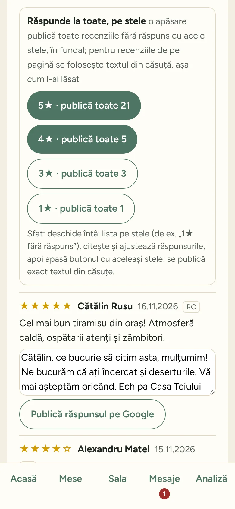
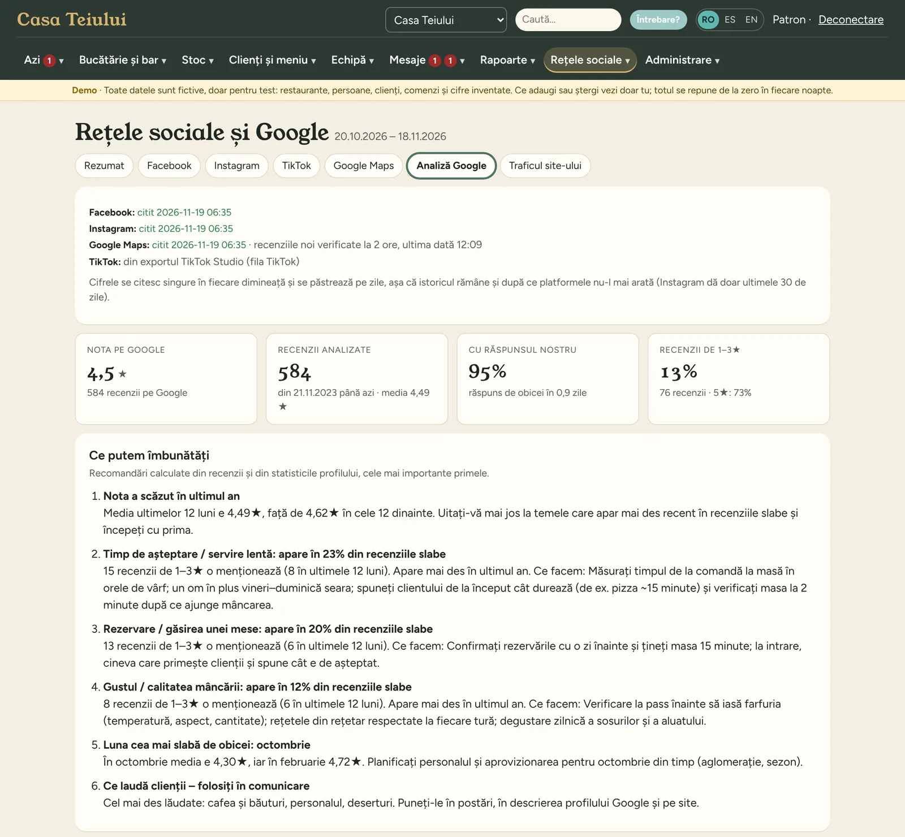

Servicii / Recenzii Google cu răspuns automat
Recenzii și reputațieFiecare recenzie Google primește răspuns. Automat, dar personal.
Răspunsul e propus de IA în tonul firmei și în limba recenziei, apoi se publică direct din aplicație. Voi alegeți ce se publică automat și ce aprobați înainte.

Tot ce trebuie, configurat pentru firma voastră.
Toate recenziile, într-un loc
Recenziile Google se aduc automat în aplicație, inclusiv cele vechi, fără dubluri.
Răspuns în limba recenziei
IA scrie un răspuns personalizat, în română, engleză sau limba clientului, în tonul firmei.
Reguli pe stele
Alegeți ce se publică automat (de ex. 5★) și ce trece întâi pe la voi (de ex. 1–3★).
Analiză și îmbunătățiri
Vedeți evoluția pe ani și luni și temele care apar des, pozitive și negative.
Analiza recenziilor: ce merită îmbunătățit.

De la prima discuție la sistem funcțional.
Acces la profil
Conectăm profilul Google Business al firmei, prin API-ul oficial.
Tonul firmei
Stabilim cum sună răspunsurile și ce reguli aveți pe stele.
Recenziile vechi
Răspundem și la recenziile rămase fără răspuns.
Pe pilot automat
Recenziile noi se aduc la 2 ore; nota apare și pe site.
Tehnologii folosite
- Google Business Profile API
- Google Places API
- Claude (Anthropic)
- Afișare automată pe site și în meniul QR
Peste 1.100 de recenzii fără răspuns, rezolvate.
Pentru un bistro cu peste 1.600 de recenzii Google și nota 4,8, aplicația a curățat dublurile din importuri și a publicat răspunsuri personalizate, în limba fiecărei recenzii.
Proiect real pentru un bistro din zona HoReCa. Cifre verificate în noiembrie 2026, rotunjite.
Merge bine împreună cu
Toate serviciileVreți asta și pentru firma voastră?
Spuneți-ne cum lucrați acum. În 30 de minute vedem împreună ce se poate automatiza, fără obligații.